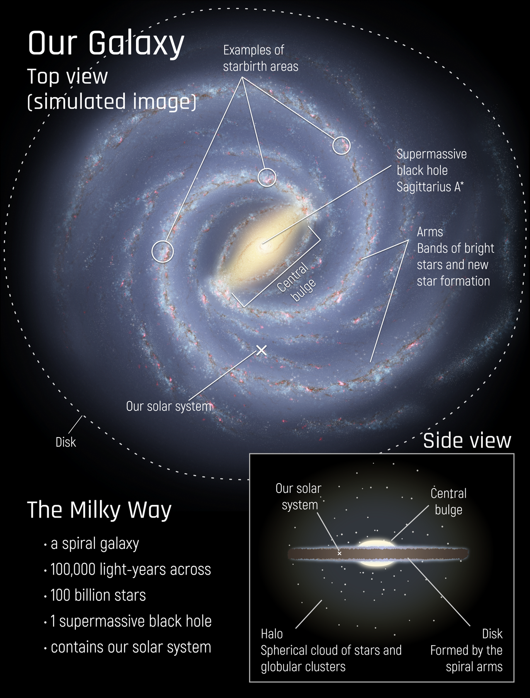
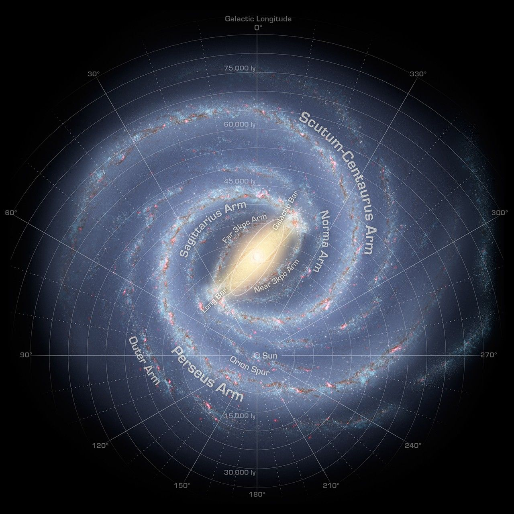
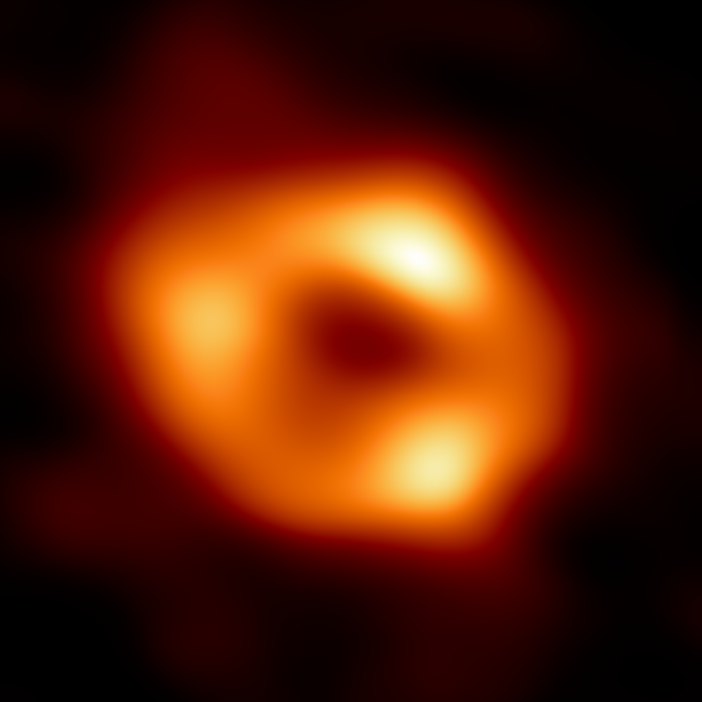
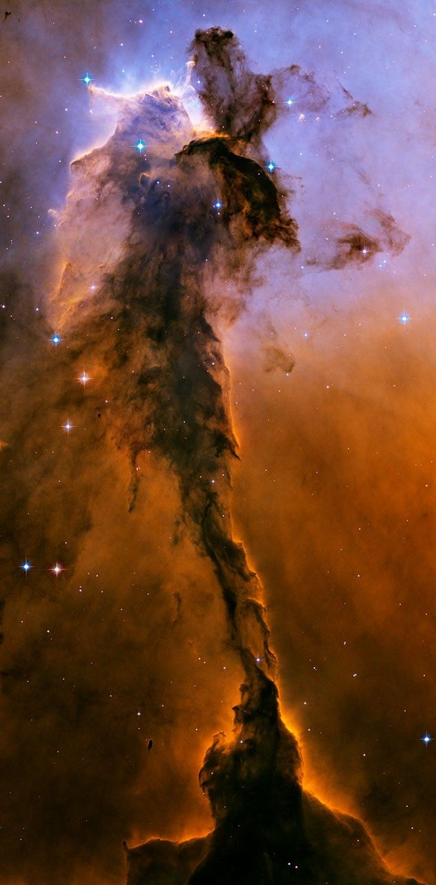
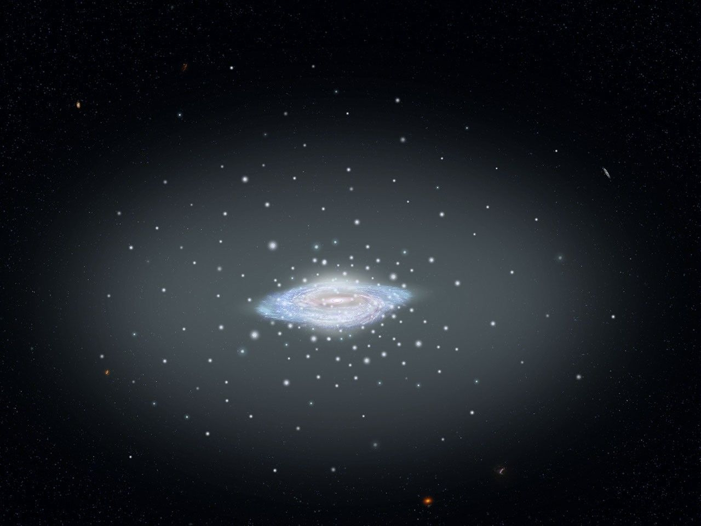

1Galactic center and bulge
The central bulge is a dense, roughly spherical region of older stars surrounding the Milky Way’s nucleus. Its stars move through a crowded environment unlike the quieter outer disk.
The Milky Way is a barred spiral galaxy: a broad disk of stars, gas, and dust surrounding a dense central bulge. It spans roughly 100,000 light-years and contains hundreds of billions of stars, including our Sun.
These are evidence-based estimates, not a census. Most entries are population counts; the white-dwarf figure is a sample of 70 detected in one Hubble bulge field.

Like early explorers mapping the continents of our globe, astronomers are busy charting the spiral structure of our galaxy. Using infrared images from NASA's Spitzer Space Telescope, scientists discovered that the Milky Way's elegant spiral structure is dominated by just two major arms—Scutum–Centaurus and Perseus—wrapping off the ends of a central bar of stars. Previously, our galaxy was thought to possess four major arms. The two now-demoted minor arms (Norma and Sagittarius) are less distinct and located between the major arms. The major arms consist of the highest densities of both young and old stars, while the minor arms are primarily filled with gas and pockets of star-forming activity. Our Sun lies near a small, partial arm called the Orion Arm, or Orion Spur, located between the Sagittarius and Perseus arms.
Approximate physical extent at each scale. For the Solar System, the boundary is the heliosphere—the bubble shaped by the Sun’s wind.
From the central black hole to the outer halo, each region reveals a different part of how our galaxy works.

The central bulge is a dense, roughly spherical region of older stars surrounding the Milky Way’s nucleus. Its stars move through a crowded environment unlike the quieter outer disk.

Sagittarius A* sits at the exact center of the galaxy. It has a mass of about four million Suns. It is dark itself, but its gravity controls the orbits of nearby stars and gas.

Spiral arms are dense regions moving through the disk, not rigid structures. Their gravity compresses gas and helps trigger new generations of stars. The Sun sits in the smaller Orion Spur between major arms.

Cold clouds of gas and dust collapse into stars inside nebulae. Radiation and stellar winds from young stars sculpt the clouds, while supernovae return enriched material to the surrounding space.

A faint halo surrounds the bright disk. It contains ancient stars and tightly packed globular clusters orbiting far above and below the galaxy’s main plane. These populations preserve clues about the Milky Way’s early history.